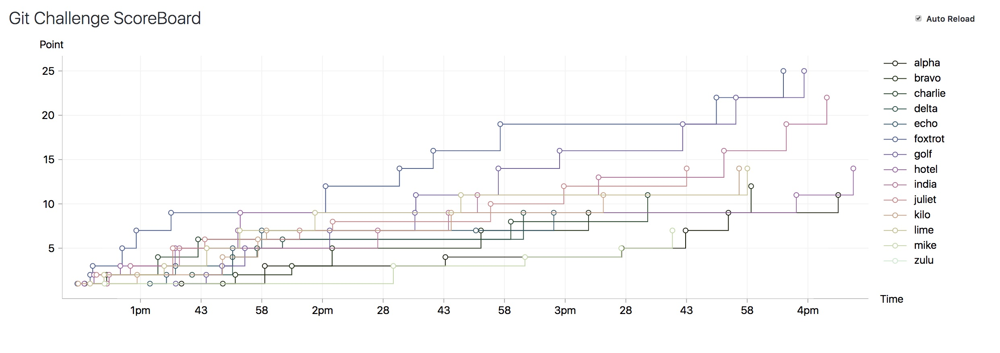

Elm で line charts する
Elm で作っているスコアボードにスコアの線グラフを追加したかったので terezka/line-charts というパッケージを使って追加した． っていうメモ書き。 追加の PR はこれです:
最終的に出来上がったグラフがこんな感じ:

実は色をランダムに生成している部分がキモ(?)です． ちなみに，本記事で扱う terezka/line-charts パッケージのバージョンは 2.0 です．
terezka/line-charts
どんなグラフが書けるかは作者が用意してるサンプルページを見ると良い． ただし，see source ボタンで右からニュッっと出てくるソースコードは Elm 0.19 では動かない点に注意． サンプルページのコードはおそらくココにある．
今回は競技プログラミングのスコア変遷をグラフ化したかったので Steeped というグラフを使うことにする(段々になっているやつ)．
LineChart.viewCustom を使ってみる
グラフを描写するには LineChart.viewCustom 関数を使う:
1引数めがどうのように描写するかの設定で，2引数目は描写する(プロットする)データのリストをである． Config data msg 型は次のようになっている:
type alias Config data msg =
{ x : Axis.Config data msg
, y : Axis.Config data msg
, container : Container.Config msg
, intersection : Axis.Intersection.Config
, interpolation : Interpolation.Config
, legends : Legends.Config data msg
, events : Events.Config data msg
, area : Area.Config
, grid : Grid.Config
, line : Line.Config data
, dots : Dots.Config data
, junk : Junk.Config data msg
}それぞれサブモジュールの設定をしている(例えば container フィールドは LineChart.Container モジュール):
x,yはX軸とY軸の設定containerはグラフを描写する外枠の設定(たぶん)intersectionは両軸の交点の設定(真ん中にするとか左下にするとか)interpolationは点と点を結ぶ線の引き方を設定(直線か曲線かなど)legendsはグラフの凡例のを設定(どの線が何のグラフかなど)eventsはグラフ上でのイベント(Msg)を設定(クリックとかマウスホバーとか)areaは線の下の部分の描写の仕方を設定defaultだと何も描写しないのでただの線グラフになるnormalだと同じ色で塗りつぶしてくれる(引数はopacity)
gridはグラフのグリッドを設定(そのまんま)lineは線の幅やホバーした時の動作を設定dotsは点の大きさやホバーした時の動作を設定junkは点や線にホバーした時にモーダル(?)かなんかを表示する設定(たぶん)
今回は基本的にサンプルコードのまんまで，軸や junk の設定を少しだけいじった．
プロットデータを用意する
2引数目の Series data はプロットしたいデータ型(data)に描写するための情報を付与したデータ型だ． 次の関数などで変換する:
line : Color -> Shape -> String -> List data -> Series data
dash : Color -> Shape -> String -> List Float -> List data -> Series dataline は直線で dash はたぶん破線． Color は色を，Shape は LineChart.Dots にある関数で点の形を，String は線の凡例名を与える． で，実際のプロットデータは List data だ． data から何をX軸にして，何をY軸にするかは Config の x・y で指定する(variable)．
今回は，各チームのスコアデータの時間毎での遷移を描写したいので，X軸に正解時間をY軸に総ポイントを割り当てる． そのためのデータ型を用意した:
type alias ScoreHistory =
{ point : Int -- 総ポイント
, latest : Maybe API.Status -- 最後にクリアステータス
}
type alias Status =
{ problem_id : Int
, correct : Bool -- クリアしてると True
, corrected_at : Maybe Int -- まだクリアしてないと Nothing
}Status はもともとある型で，サーバーサイドからスコア(Score)を取得する際に用いる． このサーバーからのスコアから Series ScoreHistory を構築する関数を用意した:
type alias Score =
{ team : String
, point : Int
, stats : List Status
}
buildScoreHistories : Model -> Color -> API.Score -> LineChart.Series ScoreHistory
buildScoreHistories model color score =
score.stats
|> List.filter .correct
|> List.sortBy (Maybe.withDefault 0 << .corrected_at)
|> List.scanl (::) []
|> List.map (buildScoreHistory model)
|> LineChart.line color Dots.circle score.team
buildScoreHistory : Model -> List API.Status -> ScoreHistory
buildScoreHistory model stats =
{ point = List.sum (List.map (findProblemPoint model) stats)
, latest = List.head stats
}
-- どの問題が何点かは `Model.problems` にしか書いてない
findProblemPoint : Model -> API.Status -> Int
findProblemPoint model status =
model.problems
|> List.find (\p -> p.id == status.problem_id)
|> Maybe.map .difficulty
|> Maybe.withDefault 0scanl で綺麗になってるのが気持ちいい． また，variable は次のように設定した:
chart : Model -> Html.Html Msg
chart model =
LineChart.viewCustom
{ y =
Axis.custom
{ title = Title.default "Point"
, variable = Just << toFloat << .point
, pixels = 380
, range = Range.padded 20 20
, axisLine = AxisLine.full Colors.gray
, ticks = Ticks.float 5 -- これは軸に表示する数字の間隔
}
, x =
Axis.custom
{ title = Title.default "Time"
, variable =
Maybe.map toFloat
<< Maybe.map (\n -> n * 1000) -- 確かデフォルト millisec
<< Maybe.andThen .corrected_at
<< .latest
, pixels = 1270
, range = Range.padded 20 20
, axisLine = AxisLine.full Colors.gray
, ticks = Ticks.time model.zone 10
}
...
}さて，ここまではいい感じにできた． 問題は buildScoreHistories の Color にどうやってチームごとに違う色を渡すか． LineChart.Colors には事前に色が用意されていたが全部で22色ぐらいしかない． できればチーム数に応じて可変にしたい．
Color を付け変える
グラフ描写に使うグラフの色はチーム数によって可変にしたい． 色を任意個数だけ生成する方法はないか調べてみたところ，tesk9/palette の Palette.Cubehelix.generate を使えば実現できそうだ:
ここで問題が一つ． line-charts は別の Color パッケージに依存しており，Color モジュールが衝突して使うことができない！
困った． とりあえず，フォークして差し替えるしかない． 差し替えたものがコチラ:
Elm のビルドツールにはパッケージをいい感じにフォーク先などに変更する方法がない． ざっくり調べてみたところ，フォークしたもの elm-packages にあげて使うか，プロジェクト内にフォークしたリポジトリを直接置いて参照するか． Elm-jp でも相談してみたところ，後者の方が良さそうなのでそうすることにした．
Elm のパッケージをフォークしたのにa差し替える
まずは普通に git submodule をします:
$ mkdir elm-lib
$ git submodule add git@github.com:matsubara0507/line-charts.git elm-lib/line-charts
$ elm-lib/line-charts
$ git checkout color-paletteそしてこのディレクトリも見るように elm.json を書き換えます:
@@ -1,30 +1,40 @@
{
"type": "application",
"source-directories": [
- "elm-src"
+ "elm-src",
+ "elm-lib/line-charts/src"
],そして，適当に import LineChart を追記して elm make するとどうなるでしょうか？ 残念ながらうまくいきません:
$ elm make elm-src/Main.elm --output=static/main.js
-- UNKNOWN IMPORT -------- elm-lib/line-charts/src/Internal/Axis/Values/Time.elm
The Internal.Axis.Values.Time module has a bad import:
import Time.Extra
I cannot find that module! Is there a typo in the module name?
The "source-directories" field of your elm.json tells me to look in directories
like elm-src, but it is not in any of them. Maybe it is in a package that is not
installed yet?Time.Extra は line-charts が依存しているパッケージで，それが elm.json に書かれてないというエラーメッセージです． サブモジュール側の依存パッケージは自動で解決してくれない(単純にローカルのソースコードが増えてるだけなので，そりゃそうって感じだ)． なので，自分で書き足す必要がある:
diff --git a/elm.json b/elm.json
index 30d0662..7c32604 100644
--- a/elm.json
+++ b/elm.json
@@ -1,36 +1,36 @@
"dependencies": {
"direct": {
"avh4/elm-color": "1.0.0",
"bartavelle/json-helpers": "2.0.2",
+ "debois/elm-dom": "1.3.0",
"elm/browser": "1.0.1",
"elm/core": "1.0.2",
"elm/html": "1.0.0",
"elm/http": "2.0.0",
"elm/json": "1.1.3",
+ "elm/svg": "1.0.1",
"elm/time": "1.0.0",
"elm/url": "1.0.0",
"elm-community/list-extra": "8.2.2",
+ "justinmimbs/time-extra": "1.1.0",
"justinmimbs/timezone-data": "2.1.4",
"krisajenkins/remotedata": "6.0.1",
- "terezka/line-charts": "2.0.0"
+ "myrho/elm-round": "1.0.4",
+ "ryannhg/date-format": "2.3.0"
},
"indirect": {
- "debois/elm-dom": "1.3.0",
"elm/bytes": "1.0.8",
"elm/file": "1.0.5",
"elm/parser": "1.1.0",
- "elm/svg": "1.0.1",
"elm/virtual-dom": "1.0.0",
- "justinmimbs/date": "3.2.0",
- "justinmimbs/time-extra": "1.1.0",
- "myrho/elm-round": "1.0.4",
- "ryannhg/date-format": "2.3.0"
+ "justinmimbs/date": "3.2.0"
}
},
"test-dependencies": {これで無事 elm make をすることができるようになった．
Palette.Cubehelix を使ってみる
いよいよ Palette.Cubehelix を使ってみる． そもそも Cubehelix とはなんなのか．
ググった感じこれっぽい． 宇宙を撮影した画像を描写するときのためのカラースキーマーっぽい(なにが課題なのかはよくわからなんだw)． Palette.Cubehelix.generate :: Int -> List Color を使うことで最大で256色を返してくれる． 更にどんな感じの色を返してくれるかは generateAdvanced の方を使い，AdvancedConfig 型の値を自作することでコントロールできる:
type alias AdvancedConfig =
{ start : Color
, rotationDirection : RotationDirection
, rotations : Float
, gamma : Float
}色々試したところ各引数はこんな感じだった:
startは HSL の Hue + Saturation を元に起点を決めるrotationDirectionは回転方向 (RGB or BGR)rotationは回転角を 0-1.5 で指定（小さいほど似た色になる）gammaは明暗な色のバランスを 0-2 で指定（0は明るい、2は暗い色が長くなる）
HSLとは RGB とは違う色の表現のし方で，色相（Hue）・彩度（Saturation）・輝度（Lightness）を指定する． 直感的なイメートして，黒から白へこうぐるっと指定した螺旋でカラーパレットを表現する感じ．
物は試し，repl で色々と試すと良い(色だけに):
> List.map Color.toHex <| Palette.generateAdvanced 10 { start = Color.fromHSL (-60,100,0), rotationDirection = Palette.RGB, rotations = 1.5, gamma = 1.0 }
["#000000","#311410","#3C3F0D","#2B6F39","#3E8590","#8984CC","#D490C6","#EAB8B1","#E5E6CA","#FFFFFF"]
: List Stringなんとこれを Slack に貼ると色を確認できる(賢い)． で，最終的には最初と最後の黒白を抜いて適当に使った．
おしまい
submodule のやつしんどいし，なんか自動で elm.json を書き換えてくれる CLI ツールでも作ろうかしら．